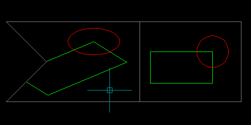

Modelspace to Paperspace
This page is delivered for consistency purposes only, as part of the LeeMac sample module of DynALisp, which shows how DynALisp turns existing AutoLISP programs into a module. The program and its description are the work of Lee Mac, who keeps all the credit for them. The original page, with the latest version, is on Lee Mac's website: https://lee-mac.com/ms2ps.html
| Function Syntax | LM-ModelSpaceToPaperSpace – original syntax: ms2ps (see aliases) |
| Current Version | 1.0 |
| Compatible with AutoCAD for Mac? | No |
| Compatible with AutoCAD LT? | Yes |
| Original Page | lee-mac.com/ms2ps.html |
Program Description
This program allows the user to copy a selection of objects from Modelspace to the current Paperspace layout through an active viewport.
This functionality is similar to the standard CHSPACE command, however, this program will copy the selection of objects, as opposed to moving the objects from Modelspace to Paperspace. I realise that this functionality could also be quite easily achieved by copying the selection of objects and proceeding to use the CHSPACE command with the copied selection, however, by avoiding the use of this standard command, this program provided an excellent exercise in matrix mathematics from which others may also benefit.
Upon issuing the command ms2ps at the AutoCAD command-line, the user is prompted to make a selection of objects to copy. Following a valid selection, the program will copy the objects to the active Paperspace layout, before performing the necessary matrix transformations to maintain the visual appearance of the objects as displayed through the active viewport.
The program is compatible with rectangular & polygonal viewports, under all UCS & view settings, and with objects constructed in any UCS construction plane.
Note that the command is only available when a Paperspace Layout is set current, and with a viewport active.
Demonstration

Bundled program notes
;;-------------------=={ Modelspace to Paperspace }==-------------------;;
;; ;;
;; This program allows the user to copy a selection of objects from ;;
;; Modelspace to Paperspace through an active viewport. ;;
;; ;;
;; This functionality is similar to the standard CHSPACE command, ;;
;; however, this program will copy the selection of objects as ;;
;; opposed to moving the objects from Modelspace to Paperspace. ;;
;; ;;
;; Upon issuing the command 'ms2ps' at the AutoCAD command-line, the ;;
;; user is prompted to make a selection of objects to copy. ;;
;; ;;
;; Following a valid selection, the program will copy the objects to ;;
;; the active Paperspace layout, before performing the necessary ;;
;; matrix transformations to maintain the visual appearance of the ;;
;; objects as displayed through the active viewport. ;;
;; ;;
;; The program is compatible with rectangular & polygonal viewports, ;;
;; under all UCS & view settings, and with objects constructed in ;;
;; any UCS construction plane. ;;
;; ;;
;; Note that the command is only available when a Paperspace Layout ;;
;; is set current, with a viewport active. ;;
;; ;;
;;----------------------------------------------------------------------;;
;; Author: Lee Mac, Copyright © 2014 - www.lee-mac.com ;;
;;----------------------------------------------------------------------;;
;; Version 1.0 - 2014-02-16 ;;
;; ;;
;; First release. ;;
;;----------------------------------------------------------------------;;
Command Names And Aliases
As in every DynALisp module, each program of this sample module has one main command, named LM-*, and the original command names of Lee Mac's page are kept as its aliases: they run the same command, and can be added, renamed or removed in Dyl-Suite (saved in Resources\Aliases.csv).
| Command | Aliases | Name |
|---|---|---|
| LM-ModelSpaceToPaperSpace | MS2PS | Model Space To Paper Space |